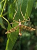
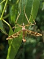

Key to families of Psychodomorpha
1.
- Wing with a network of fine crease-like lines between the true veins. Occurring near fast-flowing water.

Blephariceridae
- Wings without a network of crease-like lines between the main veins.


2
- Discal cell present. Rather large, long legged flies with patterned wings.
Tanyderidae
- Discal cell absent. Small often hairy, moth like flies. Main crossveins near base of wing. Wing short and broad: broadly ovate, often pointed;
with long dense hairs on veins

Psychodidae